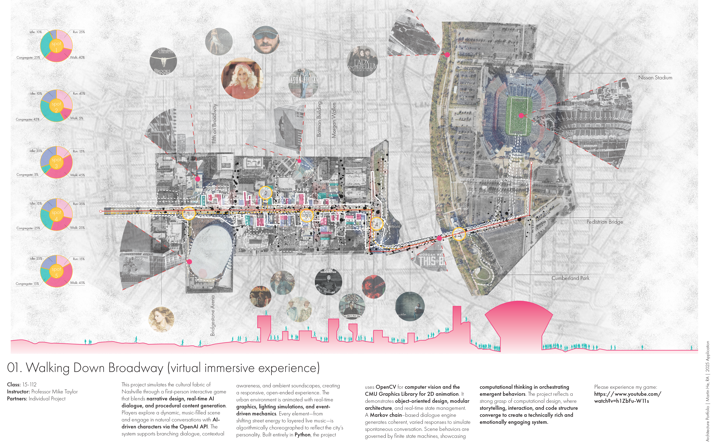
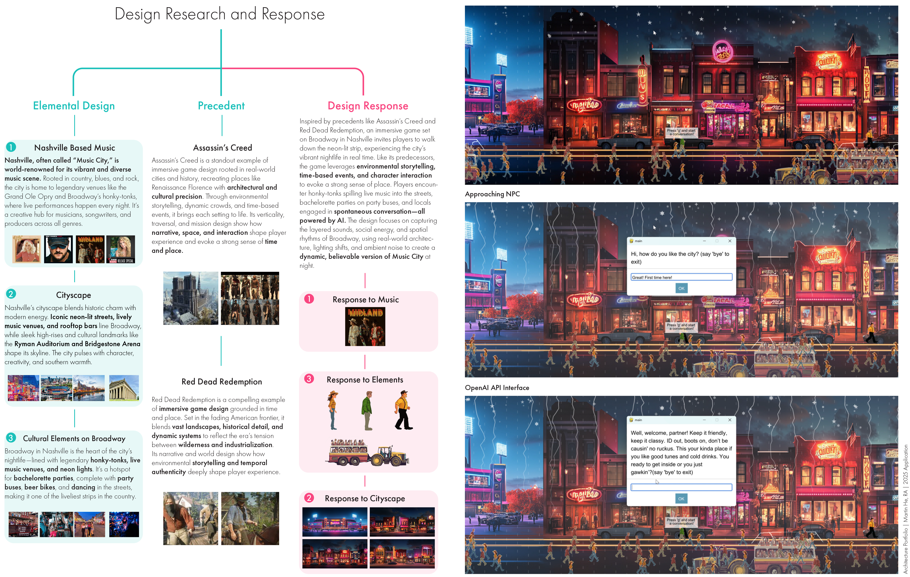
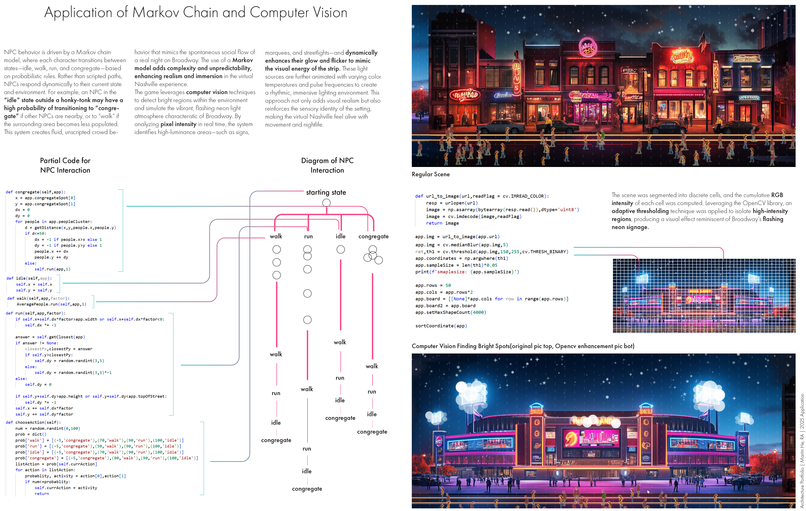

Computational Design / Interactive Experience
Walking Down Broadway
Nashville, Tennessee / Virtual environment
- Course
- CMU 15-112
- Instructor
- Professor Mike Taylor
- My role
- Individual project: game design and programming
- Tools
- Python, CMU Graphics, OpenCV, OpenAI API
Translating a city into an interactive experience
Walking Down Broadway explores Nashville through an interactive game. Music, neon light, street life, and conversations become the building blocks of a virtual urban environment.
Built in Python, the project brings together animated characters, AI dialogue, and image processing. Its focus is the relationship between a place's character and the systems that make a digital scene feel alive.
{kind=link}

From urban observation to game design
The design draws on Broadway's music venues, recognizable buildings, and social activity. Precedents such as Assassin's Creed and Red Dead Redemption informed the use of environmental storytelling to establish a sense of place.
Players approach characters and engage in conversations through the OpenAI API, connecting the experience of exploring the street with responsive dialogue.
{kind=link}

Implementation / Behavior & Light
Simple rules, changing street life
A Markov chain governs transitions between idle, walking, running, and congregating states. Probabilistic behavior gives the crowd variation beyond fixed, scripted paths.
OpenCV identifies bright regions in the scene through pixel intensity and thresholding. These regions inform the neon lighting effect, linking image analysis to the visual atmosphere of Broadway.
{kind=link}
